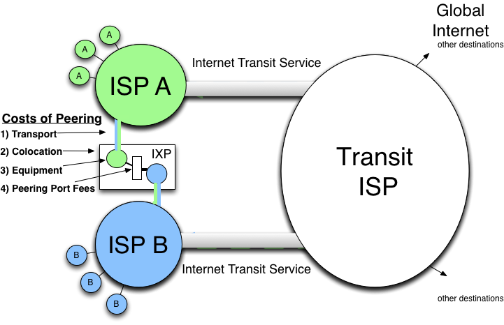
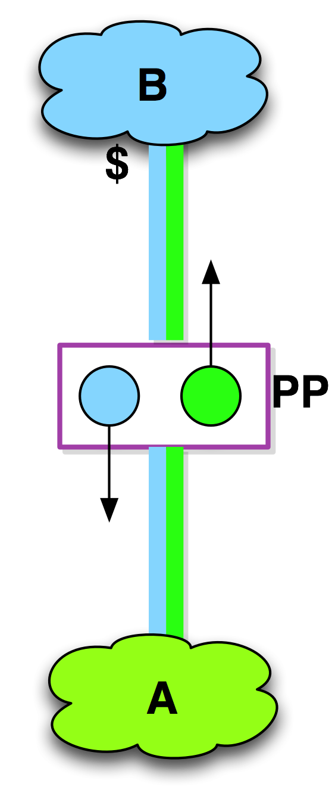

Chapter 4 - The IXP Peering Cost Model
The cost of peering at an IXP usually involves the following cost components (Figure 4-12):
- Transport fees for getting the traffic to the exchange point
- Colocation fees
- Equipment expenses
- Peering port fees on the exchange point shared fabric
Definition: Transport Fees refer to the monthly recurring expenses associated with a physical/data link layer media interconnection into a peering location.
Unlike transit service, transport is not metered; it is sold as a fixed-capacity circuit that costs the same regardless of the amount of traffic exchanged over it.
Definition: A Colocation Facility refers to a specialized data center that houses telecommunications equipment for multiple network operators.
Definition: Colocation Fees are the expenses paid to the colocation facility operator for housing the telecommunications equipment and facilitating interconnections.
Not only do colocation facilities provide the operations environment necessary for the equipment, but the better ones also make it easy and cost-effective for their population to interconnect with each other. They understand their customers’ businesses and seek to establish and grow a community of participants. A handful of these colocation centers provide much more than space, power, and cross-connects. They facilitate peering.
Definition: Equipment Fees are the amortized costs of the networking equipment used for Internet Peering.
(In modeling the Internet exchange later on, we will calculate the total cost of peering at an exchange, including equipment, and make assumptions about pricing, depreciating the deployed router gear.)
Definition: Peering Port Fees are the monthly recurring costs associated with peering across a shared peering fabric.
Together, these fees are the monthly cost of peering. These fees are typically the same monthly recurring cost regardless of the amount of traffic that is exchanged over the infrastructure.
For the cost of the interconnection, both parties can then send and receive as much traffic as can fit across the transport circuit and peering fabric.

Figure 4-12. The costs of the IXP model.
Public and Private Peering
The interconnections at the IXP take one of two forms: Private Peering or Public Peering.
Definition: Private Peering is peering across a dedicated layer 2 circuit between exactly two parties, typically using a fiber cross-connect or a VLAN between two parties at an IXP.
Private Peering is the same as the Direct-Circuit Peering model but within a building or set of interconnected buildings. There is typically a nominal cost to Private Peering (a few hundred dollars per month for a fiber cross-connect, for example), whereas circuits are typically more expensive (a few thousand dollars per month for a 10G circuit, for example).
Notes from the field.
Ray the Hoster
A counter example came up during the hard times of the last economy collapse. During the downturn, an entrepreneur (“Ray”) purchased a data center for pennies on the dollar. He “un-mothballed” the generators; Uninterruptible Power Supply (UPS); Heating, Venting, and Air Conditioning (HVAC) systems; security systems; etc. and was able to negotiate a metered transport pipe, something very rarely made available. He explained to Qwest that there was no traffic yet, but the gear was already in the building, and if a deal could be arranged he would start paying Qwest for his usage of the transport pipe. The deal was struck. This situation is the only time I have heard of the circuit provider allowing the customer to meter itself.
Definition: Public Peering is peering across a shared fabric such as an Ethernet switch.
Public Peering is the dominant method of peering in the peering ecosystems we studied, although many support both Public and Private Peering.
A basic and important question emerges:
Question: When does it make sense to peer?
We will make the business case for peering in the next chapter, but to make this chapter independently complete we will answer this question in brief.
Answer: From a strictly financial view…
Peering makes sense when it is cheaper to send traffic to peers than through a transit provider.
Notes from the field.
Pricing of Colocation Cross Connects in U.S. and Europe
In the U.S. the Private Peering cross-connects are run by the colocation provider with a nominal (~$300/month) recurring monthly charge. In Europe it is somewhat more common for ISPs to run the cross-connects themselves with perhaps a one-time fee. After tours of dozens of IXPs around the globe, I have seen some of the very messy results of decades of ad hoc cross-connect runs. Increasingly I am seeing the European colocation cross connect model migrating towards the U.S. model with recurring monthly fees for cross connects.
For a colocation center to charge ~$300/month for a fiber cross-connect that costs $40 to deploy may seem excessive. It is a large-margin product, but it is also a high-value product. This topic is discussed more in “Chapter 13 – The IXP Playbook” – you will see that this high-margin cross-connect product can motivate the IXP operator to build that population of peering customers.
A Paid Peering Aside
Some companies offer a derivative service called Paid Peering.
Definition: A Paid Peering relationship is a peering relationship with an exchange of compensation from one party to the other (Figure 4-13).
The compensation may take the metered form of $/Mbps. In other cases, one side might cover more of the peering costs than the other.
When does peering become Paid Peering?
My litmus test: If the peering is not a settlement-free and no-strings-attached peering relationship, then it is Paid Peering.

Figure 4-13. The graphical notation for Paid Peering.
Note that Paid Peering can in fact be created using transit by filtering route announcements and being selective in the routes that you accept. Since there is no indication in the global Internet routing table for “paid routes” and “free peering” routes, most people would not be able to infer the relationship from the routing tools. At the same time, from a practical perspective, the ISP community all knows who is peering and who is most likely paying. There is a long tradition of bar stories between people who are paid to talk with each other in order to keep current with this information.
Notes from the field.
Paid Peering Examples
Here are a few examples of Paid Peering observed in the field:
Paid Peering for Cash: Comcast offers a Paid Peering service for those who do not meet their settlement-free Peering Policy. The metered rate is rumored to be in the $2-$4/Mbps price range, approximately the same as the market price of transit. Why would you pay the market transit price when you receive only the Comcast routes? Peering generally provides a better performing path to the eyeballs, and if it costs the same and performs better, why wouldn’t you prefer to buy Paid Peering?
Paid Peering via Barter. PSINet in the early 1990s freely peered, but you had to meet PSINet at its data center; you paid for all of the costs of peering, including building into its location. The fact that there was an asymmetric allocation of the costs of peering makes this arrangement Paid Peering by my litmus test.
Paid Peering via Bundling/Barter. Both AOL and Comcast have worked out complex business relationships with U.S. Tier 1 ISPs in which other services such as fiber, colocation, large-volume transit relationships, etc. were contingent upon the inclusion of settlement-free peering. This peering is not true settlement-free peering since there appears to be some form of broader business arrangement (strings attached) involved in the transaction.
Peering Workshop Practice Questions
Here are a few practice questions from the Internet Peering Workshop:
1. “I am ISP A. If I peer with B and C, won’t B and C start sending their traffic to each other through my network?”
2. After delivering a speech, “Why Telstra won’t peer,” I was approached by an Australian policy maker who suggested that peering sounded a lot like bartering; that things of similar value (routes) are exchanged without the exchange of money. He pointed out that “Barter is something we tax here in Australia.” How is Paid Peering like bartering? How is Paid Peering unlike bartering?
3. Draw the network diagram using the peering and transit notation for the following scenario: ISP A and ISP B purchase transit from ISP C, which peers with ISP D and ISP E. ISP D sells transit to ISP X and ISP E sells transit to ISP Y.
4. In #3, would ISP C likely be interested in peering with ISP A?
5. Should Paid Peering be priced the same as Internet Transit? What is the case for its being priced cheaper than transit, and what is the case for pricing it higher than the price of transit?
Answers to these questions are in the answer key in the back of the book.